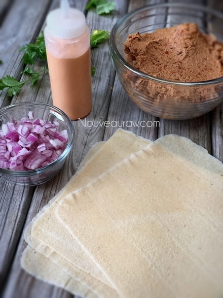
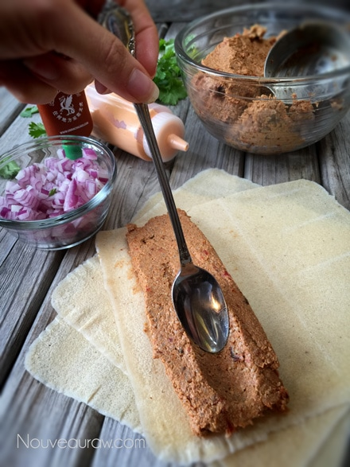
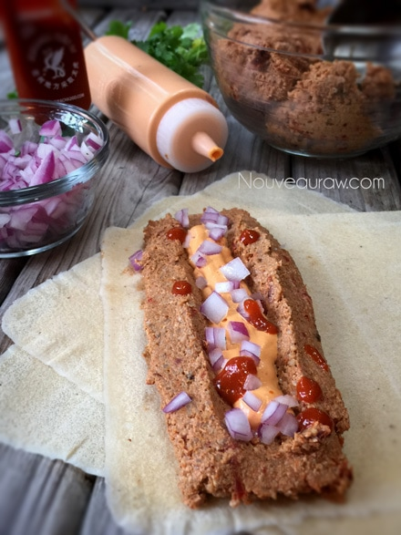
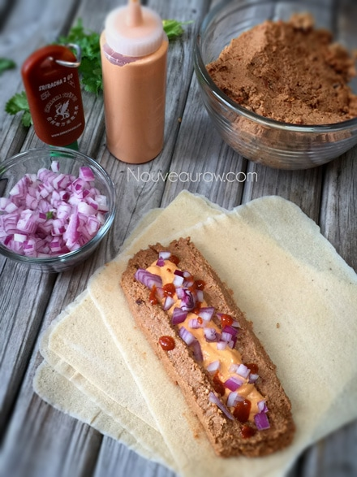
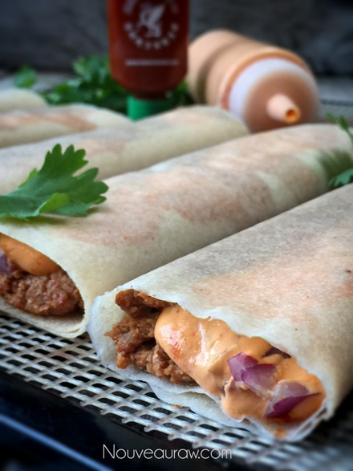
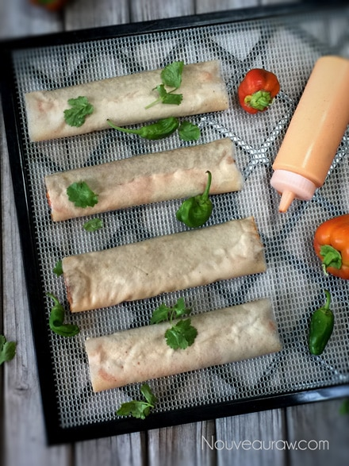
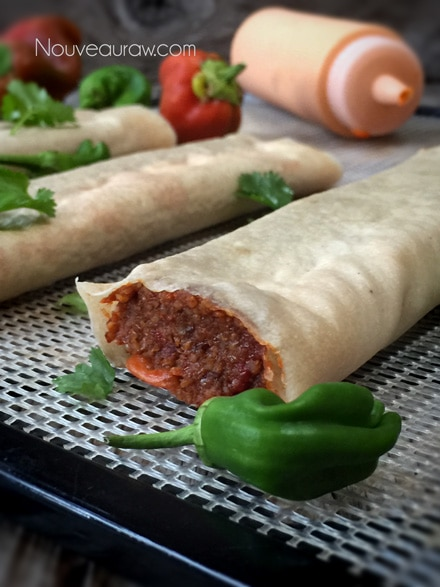
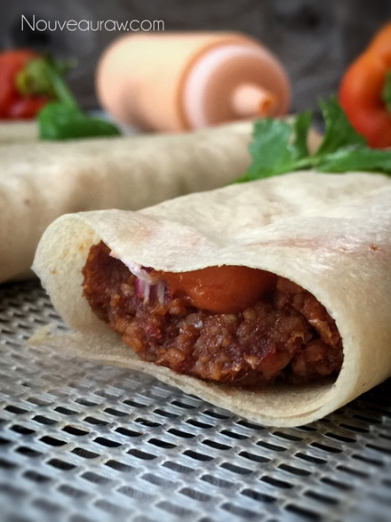
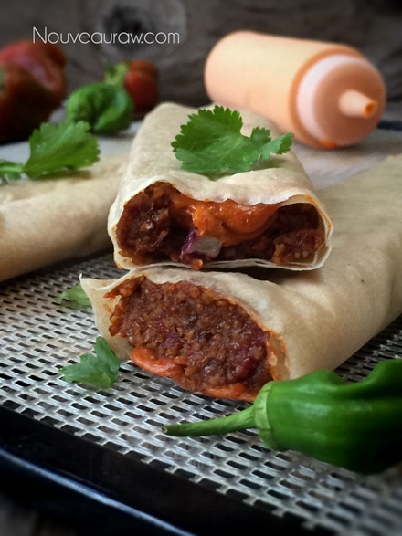
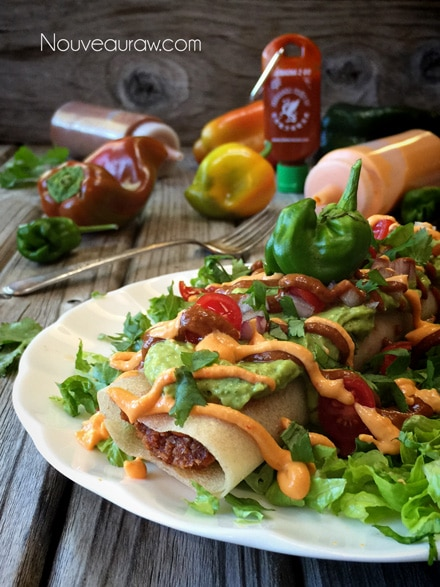

“Refried Bean” and “Cheese” Burrito
~ raw, vegan, nut-free ~
I do believe that I might have shared this before but growing up Taco Bell’s Bean n’ Cheese burritos were my all time favorite food. Standing on my tippy-toes, elbows spread and propped up on the counter to give myself some leverage… I would bat my baby blues, bob my blonde headed ponytails from side to side and place my order.
I knew just what I liked and just what I wanted. “I would like the bean and cheese burrito, light on the red sauce and onions please. Oh, and a side of beans with a little red sauce and onions please.” I never gave it a second thought that I was basically ordering an another burrito, just minus the flour tortilla. Lol, I ordered the same thing over and over throughout my childhood. Never felt compelled to change it up… why mess with a good thing?!
I really can’t bring to mind the last time that I had a bean and cheese burrito… maybe eight years ago?! Regardless of when it was, I can clearly say that it has been way too long.
But now, I don’t have to go without my beloved bean n’ cheese burrito anymore. Or even the “side” of beans with sauce and onions. The “flour tortilla” is made from raw coconut wraps… the “refried beans” are made from sunflower seeds, and the “cheese” is made from cashews. With the culinary magic of combining ingredients… this recipe tastes just like my childhood favorite.
My husband who never eats burritos LOVES it… we are talking about the kind of eye-rolling-throat-groaning-sink-into-your-into kind of love. And when I manage to do this for my man… I tingle from head to toe. Before I let you hit the streets of Mexico in your kitchen… I want to point out another wonderful treat about this recipe… it freezes beautifully! I love creating raw food staples. Make up several batches, freeze… then thaw and enjoy as the Mexican taste-bud cravings hit. Enjoy and let me know what you think in the comment section below. I always love hearing from you. Blessings, amie sue
P.S. I looked up my childhood favorite burrito, and this is what I USED to eat….pinto beans, soybean oil, seasoning (salt, sugar, spice, beet powder (VC), natural flavors, sunflower oil, maltodextrin, corn flour, trehalose, modified cornstarch). Wheat flour, water, vegetable shortening (soybean, hydrogenated soybean and/or cottonseed oil), sugar, salt, leavening (baking soda, sodium acid pyrophosphate), molasses, dough conditioner (fumaric acid, distilled monoglycerides, enzymes, wheat starch, calcium carbonate), calcium propionate, sorbic acid, and/or potassium sorbate (P). Water, seasoning (modified corn starch, maltodextrin, paprika (VC), salt, tomato powder, onion powder, spices, garlic powder, natural flavors (contains gluten), xanthan gum, malic acid, caramel color (C), ascorbic acid, citric acid, trehalose). Cheddar cheese (cultured pasteurized milk, salt, enzymes, annatto (VC)), anti-caking agent. and fresh onions <— Thank God… something was fresh! lol
yields: 5 burritos
Coconut wraps:
- 2 cups young Thai coconut meat
- 1 1/2 cups coconut water
- 1/4 tsp Himalayan pink salt
- OR use store-bought raw coconut wraps (here)
Cheese:
- 1/4 cup fresh lemon juice
- 1 large red bell pepper, deseeded and rough chopped
- 1 cup raw cashews or sunflower seeds, soaked 2+ hrs
- 1/2 cup nutritional yeast
- 1 tsp crushed red pepper or 1/4 tsp cayenne
- 1 Tbsp onion powder
- 2 cloves fresh garlic
- 1 tsp Himalayan pink salt
Beans:
- 2 cups raw sunflower seeds, soaked
- 1 cup sun-dried tomatoes, soaked
- 1 cup water, soak water, see #2 below
- 2 Tbsp olive oil
- 1 Tbsp paprika
- 1 Tbsp ground cumin
- 1 tsp onion powder
- 1 tsp garlic powder
- 1/2 tsp cayenne powder
- 1/2 tsp Himalayan pink salt
Serving suggestions:
Preparation:
Coconut wraps:
- You can purchase raw coconut wraps (here) if you are short on time or resources.
- To make homemade wraps: Place the coconut meat, water, and salt in the blender. Blend until creamy smooth; you don’t want it lumpy or gritty.
- Pour the batter onto the non-stick sheet that comes with the dehydrator. Spread it evenly across the sheet into one large square. You will cut it into quarters after it has dried.
- Dry at 115 degrees (F) for roughly 4 hours or until it is dry enough to peel off. Flip over onto the mesh sheet and dry for about 1 hour or until it isn’t tacky to touch.
- Store in a large zip-lock bag, placing parchment paper in between each piece.
Cheese:
- Prepare the cashews or sunflower seeds:
- If you are allergic to cashews, you can use sunflower seeds. Use the same measurements and technique.
- Soak for at least 2 hours. Read more about why (here).
- The soaking process will help reduce phytic acid, which will aid in digestion.
- The soaking also softens the cashews or sunflower seeds, so they blend nice and creamy.
- After they are through soaking, drain, and rinse.
- In a high-powered blender combine; lemon juice, red bell pepper, cashews or seeds, nutritional yeast, pepper, onion, garlic, and salt. Blend until creamy, and no grit is detected.
- Due to the thickness; you will want to use the tamper that comes with the blender. If you don’t have a tamper, stop the machine often to scrape down the sides and to push the batter into the blades.
- A food processor won’t create a creamy cheese.
- Place the cheese into a squeeze bottle for ease of application.
- Store extra in the fridge in an airtight sealed container for up to 4-5 days.
Beans:
- Sunflower seeds – soak in 4 cups of water for 4+ hours. Drain and discard the soak water when ready to use.
- Soaking the sunflower seeds helps to reduce the phytic acid, making it easier on your digestion.
- If you already have soaked and dehydrated sunflower seeds, you can use those without resoaking them.
- Sun-dried tomatoes – soak in 2 cups water for 30+ minutes. Drain and keep the soak water to add in later.
- After soaking the sunflower seeds and sun-dried tomatoes, drain them and place them in the food processor, fitted with the “S” blade. Process till they start to break down.
- Add soak water, olive oil, paprika, cumin, onion powder, garlic powder, cayenne, and salt. Process until it is almost smooth but with a little texture, much like refried beans.
Assembly & dehydration:
- Lay a coconut wrap on the countertop, place 1/2 cup of the refried “beans” and 1/3 cup of the “beef” on one end of the wrap.
- Fold the wrap over and roll into a tube.
- Gently flatten, pressing the filling towards the edges.
- Place the burrito on the mesh sheet that comes with the dehydrator.
- Dry at 145 degrees (F) for 1 hour, then reduce to 115 degrees (F) for 4-18 hours.
- I realize that is quite the time span… remove them when the timing is right for you. The dry time develops a deeper flavor and cooked appearance.
- If you don’t have a dehydrator, you can eat them as is. I find the drying process develops a deeper and richer flavor. You can also warm them on your stove, just be careful that you don’t get them too hot. Use your fingertips as a temp gauge or use a real thermometer.
- Enjoy warm with your favorite condiments!
- Store leftovers in the fridge for 5-7 days. OR wrap in freezer paper, slide into a freezer-safe ziplock bag and freeze for a month.








As you can see, the cheese takes on a deeper color once
dehydrated for a period of time.

Enjoy! Warmed or at room temp!

© AmieSue.com